Chapter 11 · Reliability Engineering
Source review
The original source text, examples, tables and caveats remain available. Source slide numbers and textbook PDF pages are different references. Historical assertions stay attributed to this edition; this page is not a current legal, medical, regulatory or product guide. Classroom activities are labelled separately.
Required selections
- Reliability metrics and requirements: original slides 19–24
- Measurement and operational profiles: original slides 70–75
Apply one named source concept to the chapter artifact and explain its effect. Finish any uncompleted core topic here; material does not become optional merely because it is reviewed after class. Assignment dates and marks remain in Blackboard.
Original source-slide ledger
Slide 1 · Chapter 11 – Reliability Engineering
Slide 2 · Topics covered
Topics covered Availability and reliability Reliability requirements Fault-tolerant architectures Programming for reliability Reliability measurement
Slide 3 · Software reliability
Software reliability In general, software customers expect all software to be dependable. However, for non-critical applications, they may be willing to accept some system failures. Some applications (critical systems) have very high reliability requirements and special software engineering techniques may be used to achieve this. Medical systems Telecommunications and power systems Aerospace systems
Slide 4 · Faults, errors and failures
Faults, errors and failures
Slide 5 · Faults and failures
Faults and failures Failures are a usually a result of system errors that are derived from faults in the system However, faults do not necessarily result in system errors The erroneous system state resulting from the fault may be transient and ‘corrected’ before an error arises. The faulty code may never be executed. Errors do not necessarily lead to system failures The error can be corrected by built-in error detection and recovery The failure can be protected against by built-in protection facilities. These may, for example, protect system resources from system errors
Slide 6 · Fault management
Fault management Fault avoidance The system is developed in such a way that human error is avoided and thus system faults are minimised. The development process is organised so that faults in the system are detected and repaired before delivery to the customer. Fault detection Verification and validation techniques are used to discover and remove faults in a system before it is deployed. Fault tolerance The system is designed so that faults in the delivered software do not result in system failure.
Slide 7 · Reliability achievement
Reliability achievement Fault avoidance Development technique are used that either minimise the possibility of mistakes or trap mistakes before they result in the introduction of system faults. Fault detection and removal Verification and validation techniques are used that increase the probability of detecting and correcting errors before the system goes into service are used. Fault tolerance Run-time techniques are used to ensure that system faults do not result in system errors and/or that system errors do not lead to system failures.
Slide 8 · The increasing costs of residual fault removal
The increasing costs of residual fault removal
Slide 9 · Availability and reliability
Availability and reliability
Slide 10 · Availability and reliability
Availability and reliability Reliability The probability of failure-free system operation over a specified time in a given environment for a given purpose Availability The probability that a system, at a point in time, will be operational and able to deliver the requested services Both of these attributes can be expressed quantitatively e.g. availability of 0.999 means that the system is up and running for 99.9% of the time.
Slide 11 · Reliability and specifications
Reliability and specifications Reliability can only be defined formally with respect to a system specification i.e. a failure is a deviation from a specification. However, many specifications are incomplete or incorrect – hence, a system that conforms to its specification may ‘fail’ from the perspective of system users. Furthermore, users don’t read specifications so don’t know how the system is supposed to behave. Therefore perceived reliability is more important in practice.
Slide 12 · Perceptions of reliability
Perceptions of reliability The formal definition of reliability does not always reflect the user’s perception of a system’s reliability The assumptions that are made about the environment where a system will be used may be incorrect Usage of a system in an office environment is likely to be quite different from usage of the same system in a university environment The consequences of system failures affects the perception of reliability Unreliable windscreen wipers in a car may be irrelevant in a dry climate Failures that have serious consequences (such as an engine breakdown in a car) are given greater weight by users than failures that are inconvenient
Slide 13 · A system as an input/output mapping
A system as an input/output mapping
Slide 14 · Availability perception
Availability perception Availability is usually expressed as a percentage of the time that the system is available to deliver services e.g. 99.95%. However, this does not take into account two factors: The number of users affected by the service outage. Loss of service in the middle of the night is less important for many systems than loss of service during peak usage periods. The length of the outage. The longer the outage, the more the disruption. Several short outages are less likely to be disruptive than 1 long outage. Long repair times are a particular problem.
Slide 15 · Software usage patterns
Software usage patterns
Slide 16 · Reliability in use
Reliability in use Removing X% of the faults in a system will not necessarily improve the reliability by X%. Program defects may be in rarely executed sections of the code so may never be encountered by users. Removing these does not affect the perceived reliability. Users adapt their behaviour to avoid system features that may fail for them. A program with known faults may therefore still be perceived as reliable by its users.
Slide 17 · Reliability requirements
Reliability requirements
Slide 18 · System reliability requirements
System reliability requirements Functional reliability requirements define system and software functions that avoid, detect or tolerate faults in the software and so ensure that these faults do not lead to system failure. Software reliability requirements may also be included to cope with hardware failure or operator error. Reliability is a measurable system attribute so non-functional reliability requirements may be specified quantitatively. These define the number of failures that are acceptable during normal use of the system or the time in which the system must be available.
Slide 19 · Reliability metrics
Reliability metrics Reliability metrics are units of measurement of system reliability. System reliability is measured by counting the number of operational failures and, where appropriate, relating these to the demands made on the system and the time that the system has been operational. A long-term measurement programme is required to assess the reliability of critical systems. Metrics Probability of failure on demand Rate of occurrence of failures/Mean time to failure Availability
Slide 20 · Probability of failure on demand (POFOD)
Probability of failure on demand (POFOD) This is the probability that the system will fail when a service request is made. Useful when demands for service are intermittent and relatively infrequent. Appropriate for protection systems where services are demanded occasionally and where there are serious consequence if the service is not delivered. Relevant for many safety-critical systems with exception management components Emergency shutdown system in a chemical plant.
Slide 21 · Rate of fault occurrence (ROCOF)
Rate of fault occurrence (ROCOF) Reflects the rate of occurrence of failure in the system. ROCOF of 0.002 means 2 failures are likely in each 1000 operational time units e.g. 2 failures per 1000 hours of operation. Relevant for systems where the system has to process a large number of similar requests in a short time Credit card processing system, airline booking system. Reciprocal of ROCOF is Mean time to Failure (MTTF) Relevant for systems with long transactions i.e. where system processing takes a long time (e.g. CAD systems). MTTF should be longer than expected transaction length.
Slide 22 · Availability
Availability Measure of the fraction of the time that the system is available for use. Takes repair and restart time into account Availability of 0.998 means software is available for 998 out of 1000 time units. Relevant for non-stop, continuously running systems telephone switching systems, railway signalling systems.
Slide 23 · Availability specification
Availability specification
Slide 24 · Non-functional reliability requirements
Non-functional reliability requirements Non-functional reliability requirements are specifications of the required reliability and availability of a system using one of the reliability metrics (POFOD, ROCOF or AVAIL). Quantitative reliability and availability specification has been used for many years in safety-critical systems but is uncommon for business critical systems. However, as more and more companies demand 24/7 service from their systems, it makes sense for them to be precise about their reliability and availability expectations.
Slide 25 · Benefits of reliability specification
Benefits of reliability specification The process of deciding the required level of the reliability helps to clarify what stakeholders really need. It provides a basis for assessing when to stop testing a system. You stop when the system has reached its required reliability level. It is a means of assessing different design strategies intended to improve the reliability of a system. If a regulator has to approve a system (e.g. all systems that are critical to flight safety on an aircraft are regulated), then evidence that a required reliability target has been met is important for system certification.
Slide 26 · Specifying reliability requirements
Specifying reliability requirements Specify the availability and reliability requirements for different types of failure. There should be a lower probability of high-cost failures than failures that don’t have serious consequences. Specify the availability and reliability requirements for different types of system service. Critical system services should have the highest reliability but you may be willing to tolerate more failures in less critical services. Think about whether a high level of reliability is really required. Other mechanisms can be used to provide reliable system service.
Slide 27 · ATM reliability specification
ATM reliability specification Key concerns To ensure that their ATMs carry out customer services as requested and that they properly record customer transactions in the account database. To ensure that these ATM systems are available for use when required. Database transaction mechanisms may be used to correct transaction problems so a low-level of ATM reliability is all that is required Availability, in this case, is more important than reliability
Slide 28 · ATM availability specification
ATM availability specification System services The customer account database service; The individual services provided by an ATM such as ‘withdraw cash’, ‘provide account information’, etc. The database service is critical as failure of this service means that all of the ATMs in the network are out of action. You should specify this to have a high level of availability. Database availability should be around 0.9999, between 7 am and 11pm. This corresponds to a downtime of less than 1 minute per week.
Slide 29 · ATM availability specification
ATM availability specification For an individual ATM, the key reliability issues depends on mechanical reliability and the fact that it can run out of cash. A lower level of software availability for the ATM software is acceptable. The overall availability of the ATM software might therefore be specified as 0.999, which means that a machine might be unavailable for between 1 and 2 minutes each day.
Slide 30 · Insulin pump reliability specification
Insulin pump reliability specification Probability of failure (POFOD) is the most appropriate metric. Transient failures that can be repaired by user actions such as recalibration of the machine. A relatively low value of POFOD is acceptable (say 0.002) – one failure may occur in every 500 demands. Permanent failures require the software to be re-installed by the manufacturer. This should occur no more than once per year. POFOD for this situation should be less than 0.00002.
Slide 31 · Functional reliability requirements
Functional reliability requirements Checking requirements that identify checks to ensure that incorrect data is detected before it leads to a failure. Recovery requirements that are geared to help the system recover after a failure has occurred. Redundancy requirements that specify redundant features of the system to be included. Process requirements for reliability which specify the development process to be used may also be included.
Slide 32 · Examples of functional reliability requirements
Examples of functional reliability requirements RR1: A pre-defined range for all operator inputs shall be defined and the system shall check that all operator inputs fall within this pre-defined range. (Checking) RR2: Copies of the patient database shall be maintained on two separate servers that are not housed in the same building. (Recovery, redundancy) RR3: N-version programming shall be used to implement the braking control system. (Redundancy) RR4: The system must be implemented in a safe subset of Ada and checked using static analysis. (Process)
Slide 33 · Fault-tolerant architectures
Fault-tolerant architectures
Slide 34 · Fault tolerance
Fault tolerance In critical situations, software systems must be fault tolerant. Fault tolerance is required where there are high availability requirements or where system failure costs are very high. Fault tolerance means that the system can continue in operation in spite of software failure. Even if the system has been proved to conform to its specification, it must also be fault tolerant as there may be specification errors or the validation may be incorrect.
Slide 35 · Fault-tolerant system architectures
Fault-tolerant system architectures Fault-tolerant systems architectures are used in situations where fault tolerance is essential. These architectures are generally all based on redundancy and diversity. Examples of situations where dependable architectures are used: Flight control systems, where system failure could threaten the safety of passengers Reactor systems where failure of a control system could lead to a chemical or nuclear emergency Telecommunication systems, where there is a need for 24/7 availability.
Slide 36 · Protection systems
Protection systems A specialized system that is associated with some other control system, which can take emergency action if a failure occurs. System to stop a train if it passes a red light System to shut down a reactor if temperature/pressure are too high Protection systems independently monitor the controlled system and the environment. If a problem is detected, it issues commands to take emergency action to shut down the system and avoid a catastrophe.
Slide 37 · Protection system architecture
Protection system architecture
Slide 38 · Protection system functionality
Protection system functionality Protection systems are redundant because they include monitoring and control capabilities that replicate those in the control software. Protection systems should be diverse and use different technology from the control software. They are simpler than the control system so more effort can be expended in validation and dependability assurance. Aim is to ensure that there is a low probability of failure on demand for the protection system.
Slide 39 · Self-monitoring architectures
Self-monitoring architectures Multi-channel architectures where the system monitors its own operations and takes action if inconsistencies are detected. The same computation is carried out on each channel and the results are compared. If the results are identical and are produced at the same time, then it is assumed that the system is operating correctly. If the results are different, then a failure is assumed and a failure exception is raised.
Slide 40 · Self-monitoring architecture
Self-monitoring architecture
Slide 41 · Self-monitoring systems
Self-monitoring systems Hardware in each channel has to be diverse so that common mode hardware failure will not lead to each channel producing the same results. Software in each channel must also be diverse, otherwise the same software error would affect each channel. If high-availability is required, you may use several self-checking systems in parallel. This is the approach used in the Airbus family of aircraft for their flight control systems.
Slide 42 · Airbus flight control system architecture
Airbus flight control system architecture
Slide 43 · Airbus architecture discussion
Airbus architecture discussion The Airbus FCS has 5 separate computers, any one of which can run the control software. Extensive use has been made of diversity Primary systems use a different processor from the secondary systems. Primary and secondary systems use chipsets from different manufacturers. Software in secondary systems is less complex than in primary system – provides only critical functionality. Software in each channel is developed in different programming languages by different teams. Different programming languages used in primary and secondary systems.
Slide 44 · N-version programming
N-version programming Multiple versions of a software system carry out computations at the same time. There should be an odd number of computers involved, typically 3. The results are compared using a voting system and the majority result is taken to be the correct result. Approach derived from the notion of triple-modular redundancy, as used in hardware systems.
Slide 45 · Hardware fault tolerance
Hardware fault tolerance Depends on triple-modular redundancy (TMR). There are three replicated identical components that receive the same input and whose outputs are compared. If one output is different, it is ignored and component failure is assumed. Based on most faults resulting from component failures rather than design faults and a low probability of simultaneous component failure.
Slide 46 · Triple modular redundancy
Triple modular redundancy
Slide 47 · N-version programming
N-version programming
Slide 48 · N-version programming
N-version programming The different system versions are designed and implemented by different teams. It is assumed that there is a low probability that they will make the same mistakes. The algorithms used should but may not be different. There is some empirical evidence that teams commonly misinterpret specifications in the same way and chose the same algorithms in their systems.
Slide 49 · Software diversity
Software diversity Approaches to software fault tolerance depend on software diversity where it is assumed that different implementations of the same software specification will fail in different ways. It is assumed that implementations are (a) independent and (b) do not include common errors. Strategies to achieve diversity Different programming languages Different design methods and tools Explicit specification of different algorithms
Slide 50 · Problems with design diversity
Problems with design diversity Teams are not culturally diverse so they tend to tackle problems in the same way. Characteristic errors Different teams make the same mistakes. Some parts of an implementation are more difficult than others so all teams tend to make mistakes in the same place; Specification errors; If there is an error in the specification then this is reflected in all implementations; This can be addressed to some extent by using multiple specification representations.
Slide 51 · Specification dependency
Specification dependency Both approaches to software redundancy are susceptible to specification errors. If the specification is incorrect, the system could fail This is also a problem with hardware but software specifications are usually more complex than hardware specifications and harder to validate. This has been addressed in some cases by developing separate software specifications from the same user specification.
Slide 52 · Improvements in practice
Improvements in practice In principle, if diversity and independence can be achieved, multi-version programming leads to very significant improvements in reliability and availability. In practice, observed improvements are much less significant but the approach seems leads to reliability improvements of between 5 and 9 times. The key question is whether or not such improvements are worth the considerable extra development costs for multi-version programming.
Slide 53 · Programming for reliability
Programming for reliability
Slide 54 · Dependable programming
Dependable programming Good programming practices can be adopted that help reduce the incidence of program faults. These programming practices support Fault avoidance Fault detection Fault tolerance
Slide 55 · Good practice guidelines for dependable programming
Good practice guidelines for dependable programming
Slide 56 · (1) Limit the visibility of information in a program
(1) Limit the visibility of information in a program Program components should only be allowed access to data that they need for their implementation. This means that accidental corruption of parts of the program state by these components is impossible. You can control visibility by using abstract data types where the data representation is private and you only allow access to the data through predefined operations such as get () and put ().
Slide 57 · (2) Check all inputs for validity
(2) Check all inputs for validity All program take inputs from their environment and make assumptions about these inputs. However, program specifications rarely define what to do if an input is not consistent with these assumptions. Consequently, many programs behave unpredictably when presented with unusual inputs and, sometimes, these are threats to the security of the system. Consequently, you should always check inputs before processing against the assumptions made about these inputs.
Slide 58 · Validity checks
Validity checks Range checks Check that the input falls within a known range. Size checks Check that the input does not exceed some maximum size e.g. 40 characters for a name. Representation checks Check that the input does not include characters that should not be part of its representation e.g. names do not include numerals. Reasonableness checks Use information about the input to check if it is reasonable rather than an extreme value.
Slide 59 · (3) Provide a handler for all exceptions
(3) Provide a handler for all exceptions A program exception is an error or some unexpected event such as a power failure. Exception handling constructs allow for such events to be handled without the need for continual status checking to detect exceptions. Using normal control constructs to detect exceptions needs many additional statements to be added to the program. This adds a significant overhead and is potentially error-prone.
Slide 60 · Exception handling
Exception handling
Slide 61 · Exception handling
Exception handling Three possible exception handling strategies Signal to a calling component that an exception has occurred and provide information about the type of exception. Carry out some alternative processing to the processing where the exception occurred. This is only possible where the exception handler has enough information to recover from the problem that has arisen. Pass control to a run-time support system to handle the exception. Exception handling is a mechanism to provide some fault tolerance
Slide 62 · (4) Minimize the use of error-prone constructs
(4) Minimize the use of error-prone constructs Program faults are usually a consequence of human error because programmers lose track of the relationships between the different parts of the system This is exacerbated by error-prone constructs in programming languages that are inherently complex or that don’t check for mistakes when they could do so. Therefore, when programming, you should try to avoid or at least minimize the use of these error-prone constructs.
Slide 63 · Error-prone constructs
Error-prone constructs Unconditional branch (goto) statements Floating-point numbers Inherently imprecise. The imprecision may lead to invalid comparisons. Pointers Pointers referring to the wrong memory areas can corrupt data. Aliasing can make programs difficult to understand and change. Dynamic memory allocation Run-time allocation can cause memory overflow.
Slide 64 · Error-prone constructs
Error-prone constructs Parallelism Can result in subtle timing errors because of unforeseen interaction between parallel processes. Recursion Errors in recursion can cause memory overflow as the program stack fills up. Interrupts Interrupts can cause a critical operation to be terminated and make a program difficult to understand. Inheritance Code is not localised. This can result in unexpected behaviour when changes are made and problems of understanding the code.
Slide 65 · Error-prone constructs
Error-prone constructs Aliasing Using more than 1 name to refer to the same state variable. Unbounded arrays Buffer overflow failures can occur if no bound checking on arrays. Default input processing An input action that occurs irrespective of the input. This can cause problems if the default action is to transfer control elsewhere in the program. In incorrect or deliberately malicious input can then trigger a program failure.
Slide 66 · (5) Provide restart capabilities
(5) Provide restart capabilities For systems that involve long transactions or user interactions, you should always provide a restart capability that allows the system to restart after failure without users having to redo everything that they have done. Restart depends on the type of system Keep copies of forms so that users don’t have to fill them in again if there is a problem Save state periodically and restart from the saved state
Slide 67 · (6) Check array bounds
(6) Check array bounds In some programming languages, such as C, it is possible to address a memory location outside of the range allowed for in an array declaration. This leads to the well-known ‘bounded buffer’ vulnerability where attackers write executable code into memory by deliberately writing beyond the top element in an array. If your language does not include bound checking, you should therefore always check that an array access is within the bounds of the array.
Slide 68 · (7) Include timeouts when calling external components
(7) Include timeouts when calling external components In a distributed system, failure of a remote computer can be ‘silent’ so that programs expecting a service from that computer may never receive that service or any indication that there has been a failure. To avoid this, you should always include timeouts on all calls to external components. After a defined time period has elapsed without a response, your system should then assume failure and take whatever actions are required to recover from this.
Slide 69 · (8) Name all constants that represent real-world values
(8) Name all constants that represent real-world values Always give constants that reflect real-world values (such as tax rates) names rather than using their numeric values and always refer to them by name You are less likely to make mistakes and type the wrong value when you are using a name rather than a value. This means that when these ‘constants’ change (for sure, they are not really constant), then you only have to make the change in one place in your program.
Slide 70 · Reliability measurement
Reliability measurement
Slide 71 · Reliability measurement
Reliability measurement To assess the reliability of a system, you have to collect data about its operation. The data required may include: The number of system failures given a number of requests for system services. This is used to measure the POFOD. This applies irrespective of the time over which the demands are made. The time or the number of transactions between system failures plus the total elapsed time or total number of transactions. This is used to measure ROCOF and MTTF. The repair or restart time after a system failure that leads to loss of service. This is used in the measurement of availability. Availability does not just depend on the time between failures but also on the time required to get the system back into operation.
Slide 72 · Reliability testing
Reliability testing Reliability testing (Statistical testing) involves running the program to assess whether or not it has reached the required level of reliability. This cannot normally be included as part of a normal defect testing process because data for defect testing is (usually) atypical of actual usage data. Reliability measurement therefore requires a specially designed data set that replicates the pattern of inputs to be processed by the system.
Slide 73 · Statistical testing
Statistical testing Testing software for reliability rather than fault detection. Measuring the number of errors allows the reliability of the software to be predicted. Note that, for statistical reasons, more errors than are allowed for in the reliability specification must be induced. An acceptable level of reliability should be specified and the software tested and amended until that level of reliability is reached.
Slide 74 · Reliability measurement
Reliability measurement
Slide 75 · Reliability measurement problems
Reliability measurement problems Operational profile uncertainty The operational profile may not be an accurate reflection of the real use of the system. High costs of test data generation Costs can be very high if the test data for the system cannot be generated automatically. Statistical uncertainty You need a statistically significant number of failures to compute the reliability but highly reliable systems will rarely fail. Recognizing failure It is not always obvious when a failure has occurred as there may be conflicting interpretations of a specification.
Slide 76 · Operational profiles
Operational profiles An operational profile is a set of test data whose frequency matches the actual frequency of these inputs from ‘normal’ usage of the system. A close match with actual usage is necessary otherwise the measured reliability will not be reflected in the actual usage of the system. It can be generated from real data collected from an existing system or (more often) depends on assumptions made about the pattern of usage of a system.
Slide 77 · An operational profile
An operational profile
Slide 78 · Operational profile generation
Operational profile generation Should be generated automatically whenever possible. Automatic profile generation is difficult for interactive systems. May be straightforward for ‘normal’ inputs but it is difficult to predict ‘unlikely’ inputs and to create test data for them. Pattern of usage of new systems is unknown. Operational profiles are not static but change as users learn about a new system and change the way that they use it.
Slide 79 · Key points
Key points Software reliability can be achieved by avoiding the introduction of faults, by detecting and removing faults before system deployment and by including fault tolerance facilities that allow the system to remain operational after a fault has caused a system failure. Reliability requirements can be defined quantitatively in the system requirements specification. Reliability metrics include probability of failure on demand (POFOD), rate of occurrence of failure (ROCOF) and availability (AVAIL).
Slide 80 · Key points
Key points Functional reliability requirements are requirements for system functionality, such as checking and redundancy requirements, which help the system meet its non-functional reliability requirements. Dependable system architectures are system architectures that are designed for fault tolerance. There are a number of architectural styles that support fault tolerance including protection systems, self-monitoring architectures and N-version programming.
Slide 81 · Key points
Key points Software diversity is difficult to achieve because it is practically impossible to ensure that each version of the software is truly independent. Dependable programming relies on including redundancy in a program as checks on the validity of inputs and the values of program variables. Statistical testing is used to estimate software reliability. It relies on testing the system with test data that matches an operational profile, which reflects the distribution of inputs to the software when it is in use.
Preserved original source illustrations
Select a figure to inspect it at its original size. The original PDF/PPTX retains its full layout and vector diagrams.
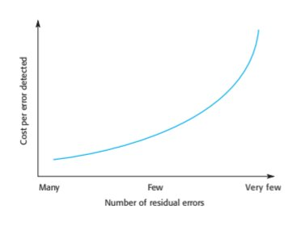
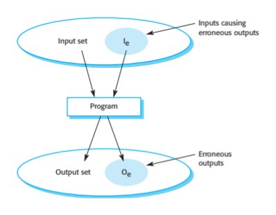
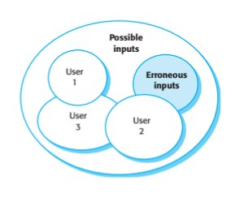
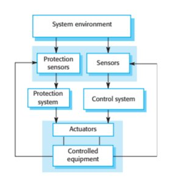
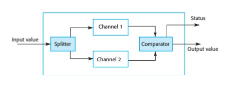
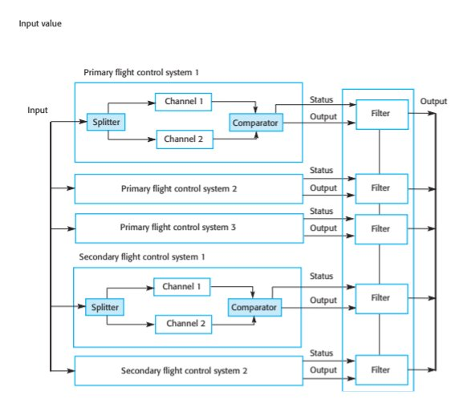
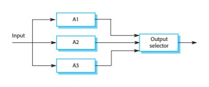
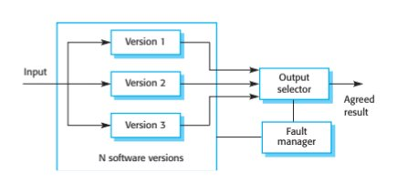
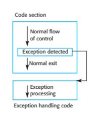
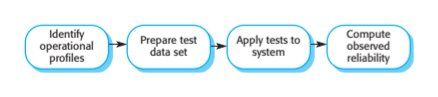
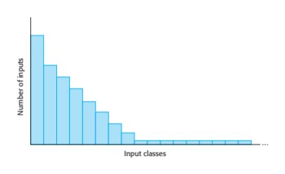
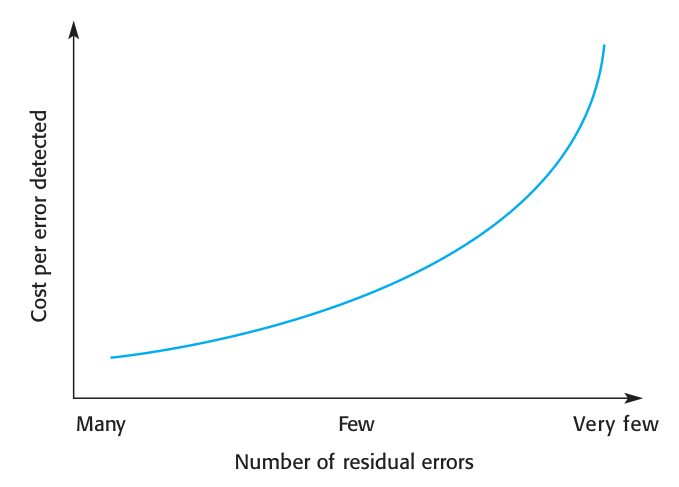
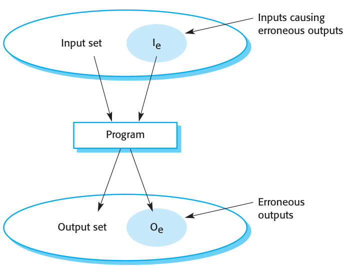
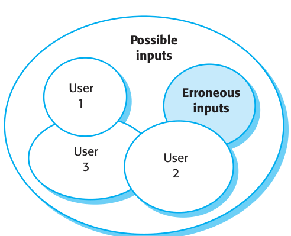
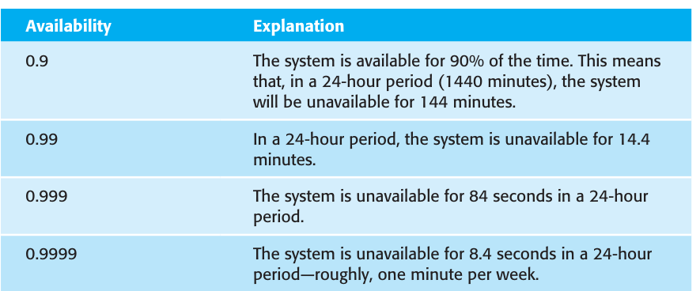
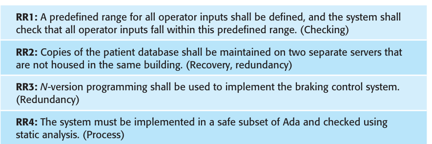
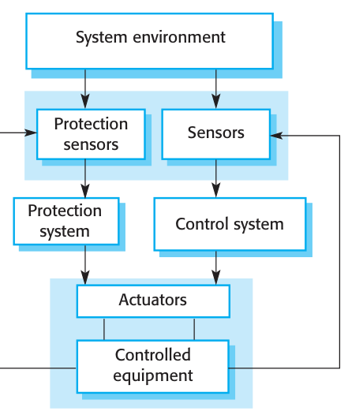
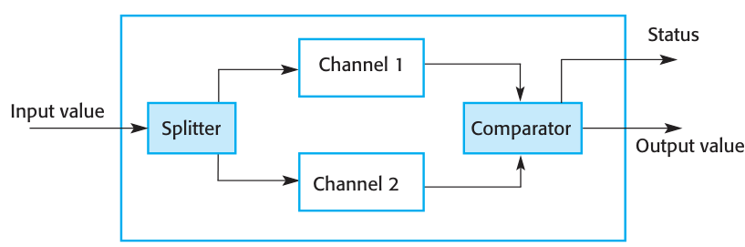
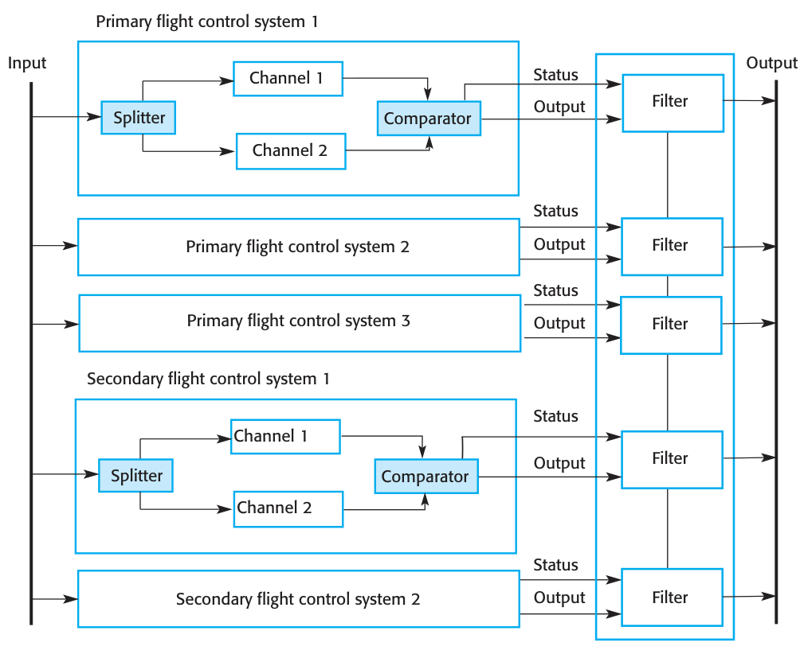
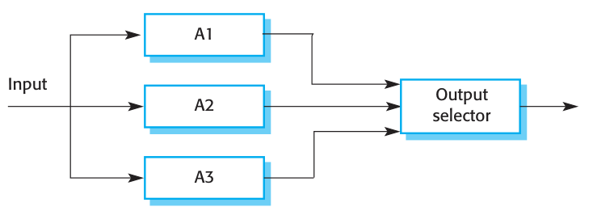
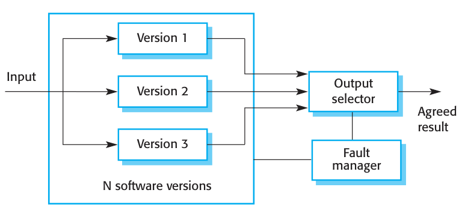
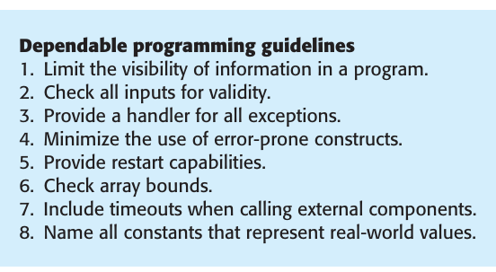
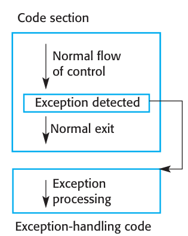
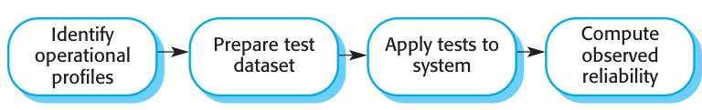
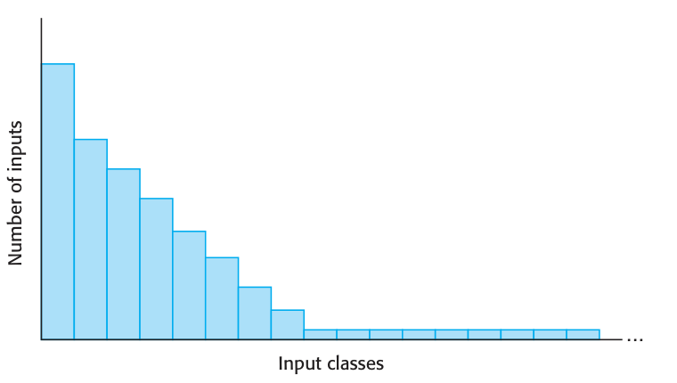
Supplied textbook chapter · complete text
The PDF remains authoritative for mathematical layout, figures and tables. Line wrapping and extraction artifacts may occur below; no textbook statement is replaced by a contemporary claim.
PDF page 1 · printed page 306
11
Reliability engineering
Objectives
The objective of this chapter is to explain how software reliability may
be specified, implemented, and measured. When you have read this
chapter, you will:
■ understand the distinction between software reliability and
software availability;
■ have been introduced to metrics for reliability specification and
how these are used to specify measurable reliability requirements;
■ understand how different architectural styles may be used to
implement reliable, fault-tolerant systems architectures;
■ know about good programming practice for reliable software
engineering;
■ understand how the reliability of a software system may be
measured using statistical testing.
Contents
11.1 Availability and reliability
11.2 Reliability requirements
11.3 Fault-tolerant architectures
11.4 Programming for reliability
11.5 Reliability measurementPDF page 2 · printed page 307
Chapter 11 ■ Reliability engineering 307
Our dependence on software systems for almost all aspects of our business and
personal lives means that we expect that software to be available when we need it.
This may be early in the morning or late at night, at weekends or during holidays—
the software must run all day, every day of the year. We expect that software will
operate without crashes and failures and will preserve our data and personal infor-
mation. We need to be able to trust the software that we use, which means that the
software must be reliable.
The use of software engineering techniques, better programming languages, and
effective quality management has led to significant improvements in software relia-
bility over the past 20 years. Nevertheless, system failures still occur that affect the
system’s availability or lead to incorrect results being produced. In situations where
software has a particularly critical role—perhaps in an aircraft or as part of the national
critical infrastructure—special reliability engineering techniques may be used to
achieve the high levels of reliability and availability that are required.
Unfortunately, it is easy to get confused when talking about system reliability, with
different people meaning different things when they talk about system faults and failures.
Brian Randell, a pioneer researcher in software reliability, defined a fault–error–failure
model (Randell 2000) based on the notion that human errors cause faults; faults lead to
errors, and errors lead to system failures. He defined these terms precisely:
1. Human error or mistake Human behavior that results in the introduction of
faults into a system. For example, in the wilderness weather system, a program-
mer might decide that the way to compute the time for the next transmission is
to add 1 hour to the current time. This works except when the transmission time
is between 23.00 and midnight (midnight is 00.00 in the 24-hour clock).
2. System fault A characteristic of a software system that can lead to a system
error. The fault in the above example is the inclusion of code to add 1 to a variable
called Transmission_time, without a check to see if the value of Transmission_
time is greater than or equal to 23.00.
3. System error An erroneous system state during execution that can lead to sys-
tem behavior that is unexpected by system users. In this example, the value of
the variable Transmission_time is set incorrectly to 24.XX rather than 00.XX
when the faulty code is executed.
4. System failure An event that occurs at some point in time when the system does
not deliver a service as expected by its users. In this case, no weather data is
transmitted because the time is invalid.
System faults do not necessarily result in system errors, and system errors do not
necessarily result in system failures:
1. Not all code in a program is executed. The code that includes a fault (e.g., the
failure to initialize a variable) may never be executed because of the way that
the software is used.PDF page 3 · printed page 308
308 Chapter 11 ■ Reliability engineering
2. Errors are transient. A state variable may have an incorrect value caused by the
execution of faulty code. However, before this is accessed and causes a system
failure, some other system input may be processed that resets the state to a valid
value. The wrong value has no practical effect.
3. The system may include fault detection and protection mechanisms. These
ensure that the erroneous behavior is discovered and corrected before the sys-
tem services are affected.
Another reason why the faults in a system may not lead to system failures is that
users adapt their behavior to avoid using inputs that they know cause program failures.
Experienced users “work around” software features that they have found to be unrelia-
ble. For example, I avoid some features, such as automatic numbering, in the word
processing system that I use because my experience is that it often goes wrong. Repairing
faults in such unused features makes no practical difference to the system reliability.
The distinction between faults, errors, and failures leads to three complementary
approaches that are used to improve the reliability of a system:
1. Fault avoidance The software design and implementation process should use
approaches to software development that help avoid design and programming
errors and so minimize the number of faults introduced into the system. Fewer
faults means less chance of runtime failures. Fault-avoidance techniques include
the use of strongly typed programming language to allow extensive compiler
checking and minimizing the use of error-prone programming language con-
structs, such as pointers.
2. Fault detection and correction Verification and validation processes are designed
to discover and remove faults in a program, before it is deployed for operational
use. Critical systems require extensive verification and validation to discover as
many faults as possible before deployment and to convince the system stake-
holders and regulators that the system is dependable. Systematic testing and
debugging and static analysis are examples of fault-detection techniques.
3. Fault tolerance The system is designed so that faults or unexpected system
behavior during execution are detected at runtime and are managed in such a
way that system failure does not occur. Simple approaches to fault tolerance
based on built-in runtime checking may be included in all systems. More spe-
cialized fault-tolerance techniques, such as the use of fault-tolerant system
architectures, discussed in Section 11.3, may be used when a very high level of
system availability and reliability is required.
Unfortunately, applying fault-avoidance, fault-detection, and fault-tolerance
techniques is not always cost-effective. The cost of finding and removing the remain-
ing faults in a software system rises exponentially as program faults are discovered
and removed (Figure 11.1). As the software becomes more reliable, you need to
spend more and more time and effort to find fewer and fewer faults. At some stage,
even for critical systems, the costs of this additional effort become unjustifiable.PDF page 4 · printed page 309
11.1 ■ Availability and reliability 309
detected
error
per
Cost
Figure 11.1 The
Many Few Very fewincreasing costs of
residual fault removal Number of residual errors
As a result, software companies accept that their software will always contain
some residual faults. The level of faults depends on the type of system. Software
products have a relatively high level of faults, whereas critical systems usually have
a much lower fault density.
The rationale for accepting faults is that, if and when the system fails, it is cheaper
to pay for the consequences of failure than it would be to discover and remove the
faults before system delivery. However, the decision to release faulty software is not
simply an economic one. The social and political acceptability of system failure
must also be taken into account.
11.1 Availability and reliability
In Chapter 10, I introduced the concepts of system reliability and system availability.
If we think of systems as delivering some kind of service (to deliver cash, control
brakes, or connect phone calls, for example), then the availability of that service is
whether or not that service is up and running and its reliability is whether or not that
service delivers correct results. Availability and reliability can both be expressed as
probabilities. If the availability is 0.999, this means that, over some time period, the
system is available for 99.9% of that time. If, on average, 2 inputs in every 1000 result
in failures, then the reliability, expressed as a rate of occurrence of failure, is 0.002.
More precise definitions of availability and reliability are:
1. Reliability The probability of failure-free operation over a specified time, in a
given environment, for a specific purpose.
2. Availability The probability that a system, at a point in time, will be operational
and able to deliver the requested services.PDF page 5 · printed page 310
310 Chapter 11 ■ Reliability engineering
Inputs causing
erroneous outputs
Input set Ie
Program
Erroneous
outputs
Output set OeFigure 11.2 A system
as an input/output
mapping
System reliability is not an absolute value—it depends on where and how that
system is used. For example, let’s say that you measure the reliability of an applica-
tion in an office environment where most users are uninterested in the operation of
the software. They follow the instructions for its use and do not try to experiment
with the system. If you then measure the reliability of the same system in a university
environment, then the reliability may be quite different. Here, students may explore
the boundaries of the system and use it in unexpected ways. This may result in system
failures that did not occur in the more constrained office environment. Therefore, the
perceptions of the system’s reliability in each of these environments are different.
The above definition of reliability is based on the idea of failure-free operation,
where failures are external events that affect the users of a system. But what consti-
tutes “failure”? A technical definition of failure is behavior that does not conform to
the system’s specification. However, there are two problems with this definition:
1. Software specifications are often incomplete or incorrect, and it is left to soft-
ware engineers to interpret how the system should behave. As they are not
domain experts, they may not implement the behavior that users expect. The
software may behave as specified, but, for users, it is still failing.
2. No one except system developers reads software specification documents. Users
may therefore anticipate that the software should behave in one way when the
specification says something completely different.
Failure is therefore not something that can be objectively defined. Rather, it is a
judgment made by users of a system. This is one reason why users do not all have the
same impression of a system’s reliability.
To understand why reliability is different in different environments, we need to think
about a system as an input/output mapping. Figure 11.2 shows a software system thatPDF page 6 · printed page 311
11.1 ■ Availability and reliability 311
Possible
inputs
User Erroneous
1 inputs
User User
3 2
Figure 11.3 Software
usage patterns
links a set of inputs with a set of outputs. Given an input or input sequence, the program
responds by producing a corresponding output. For example, given an input of a URL,
a web browser produces an output that is the display of the requested web page.
Most inputs do not lead to system failure. However, some inputs or input combi-
nations, shown in the shaded ellipse Ie in Figure 11.2, cause system failures or
erroneous outputs to be generated. The program’s reliability depends on the number
of system inputs that are members of the set of inputs that lead to an erroneous
output—in other words, the set of inputs that cause faulty code to be executed and
system errors to occur. If inputs in the set Ie are executed by frequently used parts of
the system, then failures will be frequent. However, if the inputs in Ie are executed by
code that is rarely used, then users will hardly ever see failures.
Faults that affect the reliability of the system for one user may never show up
under someone else’s mode of working. In Figure 11.3, the set of erroneous inputs
corresponds to the ellipse labeled Ie in Figure 11.2. The set of inputs produced by
User 2 intersects with this erroneous input set. User 2 will therefore experience some
system failures. User 1 and User 3, however, never use inputs from the erroneous
set. For them, the software will always appear to be reliable.
The availability of a system does not just depend on the number of system fail-
ures, but also on the time needed to repair the faults that have caused the failure.
Therefore, if system A fails once a year and system B fails once a month, then A is
apparently more reliable then B. However, assume that system A takes 6 hours to
restart after a failure, whereas system B takes 5 minutes to restart. The availability of
system B over the year (60 minutes of down time) is much better than that of system
A (360 minutes of downtime).
Furthermore, the disruption caused by unavailable systems is not reflected in the
simple availability metric that specifies the percentage of time that the system is
available. The time when the system fails is also important. If a system is unavailable
for an hour each day between 3 am and 4 am, this may not affect many users.
However, if the same system is unavailable for 10 minutes during the working day,
system unavailability has a much greater effect on users.
Reliability and availability are closely related, but sometimes one is more impor-
tant than the other. If users expect continuous service from a system, then the systemPDF page 7 · printed page 312
312 Chapter 11 ■ Reliability engineering
has a high-availability requirement. It must be available whenever a demand is
made. However, if a system can recover quickly from failures without loss of user
data, then these failures may not significantly affect system users.
A telephone exchange switch that routes phone calls is an example of a system
where availability is more important than reliability. Users expect to be able to make a
call when they pick up a phone or activate a phone app, so the system has high-
availability requirements. If a system fault occurs while a connection is being set up,
this is often quickly recoverable. Exchange or base station switches can reset the system
and retry the connection attempt. This can be done quickly, and phone users may not
even notice that a failure has occurred. Furthermore, even if a call is interrupted, the
consequences are usually not serious. Users simply reconnect if this happens.
11.2 Reliability requirements
In September 1993, a plane landed at Warsaw Airport in Poland during a thunder-
storm. For 9 seconds after landing, the brakes on the computer-controlled braking
system did not work. The braking system had not recognized that the plane had
landed and assumed that the aircraft was still airborne. A safety feature on the air-
craft had stopped the deployment of the reverse thrust system, which slows down the
aircraft, because reverse thrust is catastrophic if the plane is in the air. The plane ran
off the end of the runway, hit an earth bank, and caught fire.
The inquiry into the accident showed that the braking system software had oper-
ated according to its specification. There were no errors in the control system.
However, the software specification was incomplete and had not taken into account
a rare situation, which arose in this case. The software worked, but the system failed.
This incident shows that system dependability does not just depend on good engi-
neering. It also requires attention to detail when the system requirements are derived
and the specification of software requirements that are geared to ensuring the
dependability of a system. Those dependability requirements are of two types:
1. Functional requirements, which define checking and recovery facilities that
should be included in the system and features that provide protection against
system failures and external attacks.
2. Non-functional requirements, which define the required reliability and availa-
bility of the system.
As I discussed in Chapter 10, the overall reliability of a system depends on the
hardware reliability, the software reliability, and the reliability of the system opera-
tors. The system software has to take this requirement into account. As well as
including requirements that compensate for software failure, there may also be
related reliability requirements to help detect and recover from hardware failures
and operator errors.PDF page 8 · printed page 313
11.2 ■ Reliability requirements 313
Availability Explanation
0.9 The system is available for 90% of the time. This means
that, in a 24-hour period (1440 minutes), the system
will be unavailable for 144 minutes.
0.99 In a 24-hour period, the system is unavailable for 14.4
minutes.
0.999 The system is unavailable for 84 seconds in a 24-hour
period.
0.9999 The system is unavailable for 8.4 seconds in a 24-hour
Figure 11.4 Availability period—roughly, one minute per week.
specification
11.2.1 Reliability metrics
Reliability can be specified as a probability that a system failure will occur when a
system is in use within a specified operating environment. If you are willing to
accept, for example, that 1 in any 1000 transactions may fail, then you can specify
the failure probability as 0.001. This doesn’t mean that there will be exactly 1 failure
in every 1000 transactions. It means that if you observe N thousand transactions, the
number of failures that you observe should be about N.
Three metrics may be used to specify reliability and availability:
1. Probability of failure on demand (POFOD) If you use this metric, you define
the probability that a demand for service from a system will result in a system
failure. So, POFOD = 0.001 means that there is a 1/1000 chance that a failure
will occur when a demand is made.
2. Rate of occurrence of failures (ROCOF) This metric sets out the probable num-
ber of system failures that are likely to be observed relative to a certain time
period (e.g., an hour), or to the number of system executions. In the example
above, the ROCOF is 1/1000. The reciprocal of ROCOF is the mean time to
failure (MTTF), which is sometimes used as a reliability metric. MTTF is the
average number of time units between observed system failures. A ROCOF of
two failures per hour implies that the mean time to failure is 30 minutes.
3. Availability (AVAIL) AVAIL is the probability that a system will be operational
when a demand is made for service. Therefore, an availability of 0.9999 means
that, on average, the system will be available for 99.99% of the operating time.
Figure 11.4 shows what different levels of availability mean in practice.
POFOD should be used in situations where a failure on demand can lead to a serious
system failure. This applies irrespective of the frequency of the demands. For example,
a protection system that monitors a chemical reactor and shuts down the reaction if it is
overheating should have its reliability specified using POFOD. Generally, demands on
a protection system are infrequent as the system is a last line of defense, after all other
recovery strategies have failed. Therefore a POFOD of 0.001 (1 failure in 1000 demands)PDF page 9 · printed page 314
314 Chapter 11 ■ Reliability engineering
might seem to be risky. However, if there are only two or three demands on the system
in its entire lifetime, then the system is unlikely to ever fail.
ROCOF should be used when demands on systems are made regularly rather than
intermittently. For example, in a system that handles a large number of transactions,
you may specify a ROCOF of 10 failures per day. This means that you are willing to
accept that an average of 10 transactions per day will not complete successfully and
will have to be canceled and resubmitted. Alternatively, you may specify ROCOF as
the number of failures per 1000 transactions.
If the absolute time between failures is important, you may specify the reliability
as the mean time to failures (MTTF). For example, if you are specifying the required
reliability for a system with long transactions (such as a computer-aided design sys-
tem), you should use this metric. The MTTF should be much longer than the average
time that a user works on his or her models without saving the user’s results. This
means that users are unlikely to lose work through a system failure in any one session.
11.2.2 Non-functional reliability requirements
Non-functional reliability requirements are specifications of the required reliability
and availability of a system using one of the reliability metrics (POFOD, ROCOF, or
AVAIL) described in the previous section. Quantitative reliability and availability
specification has been used for many years in safety-critical systems but is uncom-
mon for business critical systems. However, as more and more companies demand
24/7 service from their systems, it makes sense for them to be precise about their
reliability and availability expectations.
Quantitative reliability specification is useful in a number of ways:
1. The process of deciding the required level of the reliability helps to clarify what
stakeholders really need. It helps stakeholders understand that there are different
types of system failure, and it makes clear to them that high levels of reliability
are expensive to achieve.
2. It provides a basis for assessing when to stop testing a system. You stop when
the system has reached its required reliability level.
3. It is a means of assessing different design strategies intended to improve the relia-
bility of a system. You can make a judgment about how each strategy might lead
to the required levels of reliability.
4. If a regulator has to approve a system before it goes into service (e.g., all systems
that are critical to flight safety on an aircraft are regulated), then evidence that a
required reliability target has been met is important for system certification.
To avoid incurring excessive and unnecessary costs, it is important that you spec-
ify the reliability that you really need rather than simply choose a very high level of
reliability for the whole system. You may have different requirements for differentPDF page 10 · printed page 315
11.2 ■ Reliability requirements 315
Overspecification of reliability
Overspecification of reliability means defining a level of required reliability that is higher than really necessary
for the practical operation of the software. Overspecification of reliability increases development costs dispro-
portionately. The reason for this is that the costs of reducing faults and verifying reliability increase exponentially
as reliability increases
http://software-engineering-book.com/web/over-specifying-reliability/
parts of the system if some parts are more critical than others. You should follow
these three guidelines when specifying reliability requirements:
1. Specify the availability and reliability requirements for different types of fail-
ure. There should be a lower probability of high-cost failures than failures that
don’t have serious consequences.
2. Specify the availability and reliability requirements for different types of system
service. Critical system services should have the highest reliability but you may
be willing to tolerate more failures in less critical services. You may decide that
it is only cost-effective to use quantitative reliability specification for the most
critical system services.
3. Think about whether high reliability is really required. For example, you may
use error-detection mechanisms to check the outputs of a system and have error-
correction processes in place to correct errors. There may then be no need for a
high level of reliability in the system that generates the outputs as errors can be
detected and corrected.
To illustrate these guidelines, think about the reliability and availability require-
ments for a bank ATM system that dispenses cash and provides other services to
customers. Banks have two concerns with such systems:
1. To ensure that they carry out customer services as requested and that they
properly record customer transactions in the account database.
2. To ensure that these systems are available for use when required.
Banks have many years of experience with identifying and correcting incorrect
account transactions. They use accounting methods to detect when things have gone
wrong. Most transactions that fail can simply be canceled, resulting in no loss to the
bank and minor customer inconvenience. Banks that run ATM networks therefore
accept that ATM failures may mean that a small number of transactions are incor-
rect, but they think it more cost-effective to fix these errors later rather than incur
high costs in avoiding faulty transactions. Therefore, the absolute reliability required
of an ATM may be relatively low. Several failures per day may be acceptable.PDF page 11 · printed page 316
316 Chapter 11 ■ Reliability engineering
For a bank (and for the bank’s customers), the availability of the ATM network
is more important than whether or not individual ATM transactions fail. Lack of
availability means increased demand on counter services, customer dissatisfaction,
engineering costs to repair the network, and so on. Therefore, for transaction-based
systems such as banking and e-commerce systems, the focus of reliability specifica-
tion is usually on specifying the availability of the system.
To specify the availability of an ATM network, you should identify the system
services and specify the required availability for each of these services, notably:
■ the customer account database service; and
■ the individual services provided by an ATM such as “withdraw cash” and “provide
account information.”
The database service is the most critical as failure of this service means that all
of the ATMs in the network are out of action. Therefore, you should specify this
service to have a high level of availability. In this case, an acceptable figure for data-
base availability (ignoring issues such as scheduled maintenance and upgrades)
would probably be around 0.9999, between 7 am and 11 pm. This means a downtime
of less than 1 minute per week.
For an individual ATM, the overall availability depends on mechanical reliability
and the fact that it can run out of cash. Software issues are probably less significant
than these factors. Therefore, a lower level of software availability for the ATM
software is acceptable. The overall availability of the ATM software might therefore
be specified as 0.999, which means that a machine might be unavailable for between
1 and 2 minutes each day. This allows for the ATM software to be restarted in the
event of a problem.
The reliability of control systems is usually specified in terms of the probability
that the system will fail when a demand is made (POFOD). Consider the reliability
requirements for the control software in the insulin pump, introduced in Chapter 1.
This system delivers insulin a number of times per day and monitors the user’s blood
glucose several times per hour.
There are two possible types of failure in the insulin pump:
1. Transient software failures, which can be repaired by user actions such as
resetting or recalibrating the machine. For these types of failure, a relatively
low value of POFOD (say 0.002) may be acceptable. This means that one
failure may occur in every 500 demands made on the machine. This is approx-
imately once every 3.5 days, because the blood sugar is checked about 5
times per hour.
2. Permanent software failures, which require the software to be reinstalled by
the manufacturer. The probability of this type of failure should be much lower.
Roughly once a year is the minimum figure, so POFOD should be no more
than 0.00002.PDF page 12 · printed page 317
11.2 ■ Reliability requirements 317
RR1: A predefined range for all operator inputs shall be defined, and the system shall
check that all operator inputs fall within this predefined range. (Checking)
RR2: Copies of the patient database shall be maintained on two separate servers that
are not housed in the same building. (Recovery, redundancy)
RR3: N-version programming shall be used to implement the braking control system.
(Redundancy)
Figure 11.5 Examples RR4: The system must be implemented in a safe subset of Ada and checked using
of functional reliability static analysis. (Process)
requirements
Failure to deliver insulin does not have immediate safety implications, so com-
mercial factors rather than safety factors govern the level of reliability required.
Service costs are high because users need fast repair and replacement. It is in the
manufacturer’s interest to limit the number of permanent failures that require repair.
11.2.3 Functional reliability specification
To achieve a high level of reliability and availability in a software-intensive system,
you use a combination of fault-avoidance, fault-detection, and fault-tolerance tech-
niques. This means that functional reliability requirements have to be generated which
specify how the system should provide fault avoidance, detection, and tolerance.
These functional reliability requirements should specify the faults to be detected
and the actions to be taken to ensure that these faults do not lead to system failures.
Functional reliability specification, therefore, involves analyzing the non-functional
requirements (if these have been specified), assessing the risks to reliability and
specifying system functionality to address these risks.
There are four types of functional reliability requirements:
1. Checking requirements These requirements identify checks on inputs to the sys-
tem to ensure that incorrect or out-of-range inputs are detected before they are
processed by the system.
2. Recovery requirements These requirements are geared to helping the system
recover after a failure has occurred. These requirements are usually concerned
with maintaining copies of the system and its data and specifying how to restore
system services after failure.
3. Redundancy requirements These specify redundant features of the system that
ensure that a single component failure does not lead to a complete loss of ser-
vice. I discuss this in more detail in the next chapter.
4. Process requirements These are fault-avoidance requirements, which ensure
that good practice is used in the development process. The practices specified
should reduce the number of faults in a system.
Some examples of these types of reliability requirement are shown in Figure 11.5.PDF page 13 · printed page 318
318 Chapter 11 ■ Reliability engineering
There are no simple rules for deriving functional reliability requirements.
Organizations that develop critical systems usually have organizational knowledge
about possible reliability requirements and how these requirements reflect the actual
reliability of a system. These organizations may specialize in specific types of sys-
tems, such as railway control systems, so the reliability requirements can be reused
across a range of systems.
11.3 Fault-tolerant architectures
Fault tolerance is a runtime approach to dependability in which systems include
mechanisms to continue in operation, even after a software or hardware fault has
occurred and the system state is erroneous. Fault-tolerance mechanisms detect and
correct this erroneous state so that the occurrence of a fault does not lead to a system
failure. Fault tolerance is required in systems that are safety or security critical and
where the system cannot move to a safe state when an error is detected.
To provide fault tolerance, the system architecture has to be designed to include
redundant and diverse hardware and software. Examples of systems that may need
fault-tolerant architectures are aircraft systems that must be available throughout
the duration of the flight, telecommunication systems, and critical command and
control systems.
The simplest realization of a dependable architecture is in replicated servers, where
two or more servers carry out the same task. Requests for processing are channeled
through a server management component that routes each request to a particular
server. This component also keeps track of server responses. In the event of server
failure, which can be detected by a lack of response, the faulty server is switched out
of the system. Unprocessed requests are resubmitted to other servers for processing.
This replicated server approach is widely used for transaction processing systems
where it is easy to maintain copies of transactions to be processed. Transaction
processing systems are designed so that data is only updated once a transaction has
finished correctly. Delays in processing do not affect the integrity of the system. It can
be an efficient way of using hardware if the backup server is one that is normally used
for low-priority tasks. If a problem occurs with a primary server, its unprocessed trans-
actions are transferred to the backup server, which gives that work the highest priority.
Replicated servers provide redundancy but not usually diversity. The server
hardware is usually identical, and the servers run the same version of the software.
Therefore, they can cope with hardware failures and software failures that are local-
ized to a single machine. They cannot cope with software design problems that cause
all versions of the software to fail at the same time. To handle software design fail-
ures, a system has to use diverse software and hardware.
Torres-Pomales surveys a range of software fault-tolerance techniques
(Torres-Pomales 2000), and Pullum (Pullum 2001) describes different types of
fault-tolerant architecture. In the following sections, I describe three architec-
tural patterns that have been used in fault-tolerant systems.PDF page 14 · printed page 319
11.3 ■ Fault-tolerant architectures 319
System environment
Protection Sensors
sensors
Protection
Control system system
Actuators
Controlled
equipmentFigure 11.6 Protection
system architecture
11.3.1 Protection systems
A protection system is a specialized system that is associated with some other sys-
tem. This is usually a control system for some process, such as a chemical manu-
facturing process, or an equipment control system, such as the system on a
driverless train. An example of a protection system might be a system on a train
that detects if the train has gone through a red signal. If there is no indication that
the train control system is slowing down the train, then the protection system auto-
matically applies the train brakes to bring it to a halt. Protection systems indepen-
dently monitor their environment. If sensors indicate a problem that the controlled
system is not dealing with, then the protection system is activated to shut down the
process or equipment.
Figure 11.6 illustrates the relationship between a protection system and a con-
trolled system. The protection system monitors both the controlled equipment and
the environment. If a problem is detected, it issues commands to the actuators to shut
down the system or invoke other protection mechanisms such as opening a pressure-
release valve. Notice that there are two sets of sensors. One set is used for normal
system monitoring and the other specifically for the protection system. In the event
of sensor failure, backups are in place that will allow the protection system to con-
tinue in operation. The system may also have redundant actuators.
A protection system only includes the critical functionality that is required to
move the system from a potentially unsafe state to a safe state (which could be sys-
tem shutdown). It is an instance of a more general fault-tolerant architecture in which
a principal system is supported by a smaller and simpler backup system that only
includes essential functionality. For example, the control software for the U.S. Space
Shuttle had a backup system with “get you home” functionality. That is, the backup
system could land the vehicle if the principal control system failed but had no other
control functions.PDF page 15 · printed page 320
320 Chapter 11 ■ Reliability engineering
Status
Channel 1
Input value
Splitter Comparator
Output value
Channel 2
Figure 11.7 Self-
monitoring architecture
The advantage of this architectural style is that protection system software can be
much simpler than the software that is controlling the protected process. The only
function of the protection system is to monitor operation and to ensure that the sys-
tem is brought to a safe state in the event of an emergency. Therefore, it is possible
to invest more effort in fault avoidance and fault detection. You can check that the
software specification is correct and consistent and that the software is correct with
respect to its specification. The aim is to ensure that the reliability of the protection
system is such that it has a very low probability of failure on demand (say, 0.001).
Given that demands on the protection system should be rare, a probability of failure
on demand of 1/1000 means that protection system failures should be very rare.
11.3.2 Self-monitoring architectures
A self-monitoring architecture (Figure 11.7) is a system architecture in which the sys-
tem is designed to monitor its own operation and to take some action if a problem is
detected. Computations are carried out on separate channels, and the outputs of these
computations are compared. If the outputs are identical and are available at the same
time, then the system is judged to be operating correctly. If the outputs are different,
then a failure is assumed. When this occurs, the system raises a failure exception on the
status output line. This signals that control should be transferred to some other system.
To be effective in detecting both hardware and software faults, self-monitoring
systems have to be designed so that:
1. The hardware used in each channel is diverse. In practice, this might mean that
each channel uses a different processor type to carry out the required computa-
tions, or the chipset making up the system may be sourced from different manu-
facturers. This reduces the probability of common processor design faults
affecting the computation.
2. The software used in each channel is diverse. Otherwise, the same software
error could arise at the same time on each channel.
On its own, this architecture may be used in situations where it is important for
computations to be correct, but where availability is not essential. If the answersPDF page 16 · printed page 321
11.3 ■ Fault-tolerant architectures 321
Primary flight control system 1
Input Output
Channel 1 Status
Output Filter
Splitter Comparator
Channel 2
Status
Primary flight control system 2 Output Filter
Status
Primary flight control system 3 Output Filter
Secondary flight control system 1
Status
Channel 1
Output Filter
Splitter Comparator
Channel 2
Status
Secondary flight control system 2 Output Filter
Figure 11.8 The from each channel differ, the system shuts down. For many medical treatment and
Airbus flight control diagnostic systems, reliability is more important than availability because an incor-
system architecture
rect system response could lead to the patient receiving incorrect treatment. However,
if the system shuts down in the event of an error, this is an inconvenience but the
patient will not usually be harmed.
In situations that require high availability, you have to use several self-checking
systems in parallel. You need a switching unit that detects faults and selects a
result from one of the systems, where both channels are producing a consistent
response. This approach is used in the flight control system for the Airbus 340
series of aircraft, which uses five self-checking computers. Figure 11.8 is a simpli-
fied diagram of the Airbus flight control system that shows the organization of the
self-monitoring systems.
In the Airbus flight control system, each of the flight control computers carries out
the computations in parallel, using the same inputs. The outputs are connected to
hardware filters that detect if the status indicates a fault and, if so, that the output from
that computer is switched off. The output is then taken from an alternative system.
Therefore, it is possible for four computers to fail and for the aircraft operation to
continue. In more than 15 years of operation, there have been no reports of situations
where control of the aircraft has been lost due to total flight control system failure.PDF page 17 · printed page 322
322 Chapter 11 ■ Reliability engineering
A1
Input
Output
A2
selector
Figure 11.9 Triple A3
modular redundancy
The designers of the Airbus system have tried to achieve diversity in a number of
different ways:
1. The primary flight control computers use a different processor from the second-
ary flight control systems.
2. The chipset that is used in each channel in the primary and secondary systems is
supplied by a different manufacturer.
3. The software in the secondary flight control systems provides critical function-
ality only—it is less complex than the primary software.
4. The software for each channel in both the primary and the secondary systems is
developed using different programming languages and by different teams.
5. Different programming languages are used in the secondary and primary systems.
As I discuss in Section 11.3.4, these do not guarantee diversity but they reduce
the probability of common failures in different channels.
11.3.3 N-version programming
Self-monitoring architectures are examples of systems in which multiversion
programming is used to provide software redundancy and diversity. This notion of
multiversion programming has been derived from hardware systems where the
notion of triple modular redundancy (TMR) has been used for many years to build
systems that are tolerant of hardware failures (Figure 11.9).
In a TMR system, the hardware unit is replicated three (or sometimes more)
times. The output from each unit is passed to an output comparator that is usually
implemented as a voting system. This system compares all of its inputs, and, if two
or more are the same, then that value is output. If one of the units fails and does not
produce the same output as the other units, its output is ignored. A fault manager
may try to repair the faulty unit automatically, but if this is impossible, the system is
automatically reconfigured to take the unit out of service. The system then continues
to function with two working units.
This approach to fault tolerance relies on most hardware failures being the result
of component failure rather than design faults. The components are therefore likelyPDF page 18 · printed page 323
11.3 ■ Fault-tolerant architectures 323
Version 1
Input Output
Version 2
selector
Agreed
result
Version 3
Fault
manager
Figure 11.10 N-version N software versions
programming
to fail independently. It assumes that, when fully operational, all hardware units per-
form to specification. There is therefore a low probability of simultaneous compo-
nent failure in all hardware units.
Of course, the components could all have a common design fault and thus all
produce the same (wrong) answer. Using hardware units that have a common speci-
fication but that are designed and built by different manufacturers reduces the
chances of such a common mode failure. It is assumed that the probability of differ-
ent teams making the same design or manufacturing error is small.
A similar approach can be used for fault-tolerant software where N diverse ver-
sions of a software system execute in parallel (Avizienis 1995). This approach to
software fault tolerance, illustrated in Figure 11.10, has been used in railway signal-
ing systems, aircraft systems, and reactor protection systems.
Using a common specification, the same software system is implemented by a
number of teams. These versions are executed on separate computers. Their outputs
are compared using a voting system, and inconsistent outputs or outputs that are not
produced in time are rejected. At least three versions of the system should be avail-
able so that two versions should be consistent in the event of a single failure.
N-version programming may be less expensive than self-checking architectures
in systems for which a high level of availability is required. However, it still requires
several different teams to develop different versions of the software. This leads to
very high software development costs. As a result, this approach is only used in sys-
tems where it is impractical to provide a protection system that can guard against
safety-critical failures.
11.3.4 Software diversity
All of the above fault-tolerant architectures rely on software diversity to achieve fault
tolerance. This is based on the assumption that diverse implementations of the same
specification (or a part of the specification, for protection systems) are independent.
They should not include common errors and so will not fail in the same way, at the
same time. The software should therefore be written by different teams who should
not communicate during the development process. This requirement reduces the
chances of common misunderstandings or misinterpretations of the specification.PDF page 19 · printed page 324
324 Chapter 11 ■ Reliability engineering
The company that is procuring the system may include explicit diversity policies that
are intended to maximize the differences between the system versions. For example:
1. By including requirements that different design methods should be used. For
example, one team may be required to produce an object-oriented design, and
another team may produce a function-oriented design.
2. By stipulating that the programs should be implemented using different pro-
gramming languages. For example, in a three-version system, Ada, C++, and
Java could be used to write the software versions.
3. By requiring the use of different tools and development environments for the
system.
4. By requiring different algorithms to be used in some parts of the implementa-
tion. However, this limits the freedom of the design team and may be difficult to
reconcile with system performance requirements.
Ideally, the diverse versions of the system should have no dependencies and so
should fail in completely different ways. If this is the case, then the overall reliability
of a diverse system is obtained by multiplying the reliabilities of each channel. So, if
each channel has a probability of failure on demand of 0.001, then the overall
POFOD of a three-channel system (with all channels independent) is a million times
greater than the reliability of a single channel system.
In practice, however, achieving complete channel independence is impossible. It has
been shown experimentally that independent software design teams often make the
same mistakes or misunderstand the same parts of the specification (Brilliant, Knight,
and Leveson 1990; Leveson 1995). There are several reasons for this misunderstanding:
1. Members of different teams are often from the same cultural background and may
have been educated using the same approach and textbooks. This means that they
may find the same things difficult to understand and have common difficulties in
communicating with domain experts. It is quite possible that they will, indepen-
dently, make the same mistakes and design the same algorithms to solve a problem.
2. If the requirements are incorrect or they are based on misunderstandings about
the environment of the system, then these mistakes will be reflected in each
implementation of the system.
3. In a critical system, the detailed system specification that is derived from the
system’s requirements should provide an unambiguous definition of the sys-
tem’s behavior. However, if the specification is ambiguous, then different teams
may misinterpret the specification in the same way.
One way to reduce the possibility of common specification errors is to develop
detailed specifications for the system independently and to define the specifications in
different languages. One development team might work from a formal specification,PDF page 20 · printed page 325
11.4 ■ Programming for reliability 325
another from a state-based system model, and a third from a natural language specifica-
tion. This approach helps avoid some errors of specification interpretation, but does not
get around the problem of requirements errors. It also introduces the possibility of
errors in the translation of the requirements, leading to inconsistent specifications.
In an analysis of the experiments, Hatton (Hatton 1997) concluded that a three-channel
system was somewhere between 5 and 9 times more reliable than a single-channel
system. He concluded that improvements in reliability that could be obtained by devot-
ing more resources to a single version could not match this and so N-version approaches
were more likely to lead to more reliable systems than single-version approaches.
What is unclear, however, is whether the improvements in reliability from a mul-
tiversion system are worth the extra development costs. For many systems, the extra
costs may not be justifiable, as a well-engineered single-version system may be good
enough. It is only in safety- and mission-critical systems, where the costs of failure
are very high, that multiversion software may be required. Even in such situations
(e.g., a spacecraft system), it may be enough to provide a simple backup with limited
functionality until the principal system can be repaired and restarted.
11.4 Programming for reliability
I have deliberately focused in this book on programming-language independent
aspects of software engineering. It is almost impossible to discuss programming
without getting into the details of a specific programming language. However, when
considering reliability engineering, there are a set of accepted good programming
practices that are fairly universal and that help reduce faults in delivered systems.
A list of eight good practice guidelines is shown in Figure 11.11. They can be
applied regardless of the particular programming language used for systems devel-
opment, although the way they are used depends on the specific languages and nota-
tions that are used for system development. Following these guidelines also reduces
the chances of introducing security-related vulnerabilities into programs.
Guideline 1: Control the visibility of information in a program
A security principle that is adopted by military organizations is the “need to know”
principle. Only those individuals who need to know a particular piece of information
in order to carry out their duties are given that information. Information that is not
directly relevant to their work is withheld.
When programming, you should adopt an analogous principle to control access to the
variables and data structures that you use. Program components should only be allowed
access to data that they need for their implementation. Other program data should be
inaccessible and hidden from them. If you hide information, it cannot be corrupted by
program components that are not supposed to use it. If the interface remains the same, the
data representation may be changed without affecting other components in the system.PDF page 21 · printed page 326
326 Chapter 11 ■ Reliability engineering
Dependable programming guidelines
1. Limit the visibility of information in a program.
2. Check all inputs for validity.
3. Provide a handler for all exceptions.
4. Minimize the use of error-prone constructs.
5. Provide restart capabilities.
Figure 11.11 Good 6. Check array bounds.
practice guidelines for 7. Include timeouts when calling external components.
dependable 8. Name all constants that represent real-world values.
programming
You can achieve this by implementing data structures in your program as abstract
data types. An abstract data type is one in which the internal structure and represen-
tation of a variable of that type are hidden. The structure and attributes of the type
are not externally visible, and all access to the data is through operations.
For example, you might have an abstract data type that represents a queue of
requests for service. Operations should include get and put, which add and remove
items from the queue, and an operation that returns the number of items in the queue.
You might initially implement the queue as an array but subsequently decide to
change the implementation to a linked list. This can be achieved without any changes
to code using the queue, because the queue representation is never directly accessed.
In some object-oriented languages, you can implement abstract data types using
interface definitions, where you declare the interface to an object without reference
to its implementation. For example, you can define an interface Queue, which sup-
ports methods to place objects onto the queue, remove them from the queue, and
query the size of the queue. In the object class that implements this interface, the
attributes and methods should be private to that class.
Guideline 2: Check all inputs for validity
All programs take inputs from their environment and process them. The specification
makes assumptions about these inputs that reflect their real-world use. For example, it
may be assumed that a bank account number is always an eight-digit positive integer. In
many cases, however, the system specification does not define what actions should be
taken if the input is incorrect. Inevitably, users will make mistakes and will sometimes
enter the wrong data. As I discuss in Chapter 13, malicious attacks on a system may
rely on deliberately entering invalid information. Even when inputs come from sensors
or other systems, these systems can go wrong and provide incorrect values.
You should therefore always check the validity of inputs as soon as they are read
from the program’s operating environment. The checks involved obviously depend
on the inputs themselves, but possible checks that may be used are:
1. Range checks You may expect inputs to be within a particular range. For exam-
ple, an input that represents a probability should be within the range 0.0 to 1.0;
an input that represents the temperature of a liquid water should be between 0
degrees Celsius and 100 degrees Celsius, and so on.PDF page 22 · printed page 327
11.4 ■ Programming for reliability 327
2. Size checks You may expect inputs to be a given number of characters, for
example, 8 characters to represent a bank account. In other cases, the size may
not be fixed, but there may be a realistic upper limit. For example, it is unlikely
that a person’s name will have more than 40 characters.
3. Representation checks You may expect an input to be of a particular type, which
is represented in a standard way. For example, people’s names do not include
numeric characters, email addresses are made up of two parts, separated by a @
sign, and so on.
4. Reasonableness checks Where an input is one of a series and you know some-
thing about the relationships between the members of the series, then you can
check that an input value is reasonable. For example, if the input value repre-
sents the readings of a household electricity meter, then you would expect the
amount of electricity used to be approximately the same as in the corresponding
period in the previous year. Of course, there will be variations. but order of
magnitude differences suggest that something has gone wrong.
The actions that you take if an input validation check fails depend on the type
of system being implemented. In some cases, you report the problem to the user
and request that the value is re-input. Where a value comes from a sensor, you
might use the most recent valid value. In embedded real-time systems, you might
have to estimate the value based on previous data, so that the system can continue
in operation.
Guideline 3: Provide a handler for all exceptions
During program execution, errors or unexpected events inevitably occur. These may
arise because of a program fault, or they may be a result of unpredictable external
circumstances. An error or an unexpected event that occurs during the execution of a
program is called an exception. Examples of exceptions might be a system power
failure, an attempt to access nonexistent data, or numeric overflow or underflow.
Exceptions may be caused by hardware or software conditions. When an excep-
tion occurs, it must be managed by the system. This can be done within the program
itself, or it may involve transferring control to a system exception-handling mecha-
nism. Typically, the system’s exception management mechanism reports the error
and shuts down execution. Therefore, to ensure that program exceptions do not
cause system failure, you should define an exception handler for all possible excep-
tions that may arise; you should also make sure that all exceptions are detected and
explicitly handled.
Languages such as Java, C++, and Python have built-in exception-handling
constructs. When an exceptional situation occurs, the exception is signaled and the
language runtime system transfers control to an exception handler. This is a code
section that states exception names and appropriate actions to handle each exception
(Figure 11.12). The exception handler is outside the normal flow of control, and this
normal control flow does not resume after the exception has been handled.PDF page 23 · printed page 328
328 Chapter 11 ■ Reliability engineering
Code section
Normal flow
of control
Exception detected
Normal exit
Exception
processing
Figure 11.12 Exception
handling Exception-handling code
An exception handler usually does one of three things:
1. Signals to a higher-level component that an exception has occurred and pro-
vides information to that component about the type of exception. You use this
approach when one component calls another and the calling component needs to
know if the called component has executed successfully. If not, it is up to the
calling component to take action to recover from the problem.
2. Carries out some alternative processing to that which was originally intended.
Therefore, the exception handler takes some actions to recover from the prob-
lem. Processing may then continue as normal. Alternatively, the exception han-
dler may indicate that an exception has occurred so that a calling component is
aware of and can deal with the exception.
3. Passes control to the programming language runtime support system that han-
dles the exception. This is often the default when faults occur in a program, for
example, when a numeric value overflows. The usual action of the runtime sys-
tem is to halt processing. You should only use this approach when it is possible
to move the system to a safe and quiescent state, before handing over control to
the runtime system.
Handling exceptions within a program makes it possible to detect and recover
from some input errors and unexpected external events. As such, it provides a degree
of fault tolerance. The program detects faults and can take action to recover from
them. As most input errors and unexpected external events are usually transient, it is
often possible to continue normal operation after the exception has been processed.
Guideline 4: Minimize the use of error-prone constructs
Faults in programs, and therefore many program failures, are usually a consequence
of human error. Programmers make mistakes because they lose track of the numer-
ous relationships between the state variables. They write program statements that
result in unexpected behavior and system state changes. People will always makePDF page 24 · printed page 329
11.4 ■ Programming for reliability 329
Error-prone constructs
Some programming language features are more likely than others to lead to the introduction of program bugs.
Program reliability is likely to be improved if you avoid using these constructs. Wherever possible, you should
minimize the use of go to statements, floating-point numbers, pointers, dynamic memory allocation, parallel-
ism, recursion, interrupts, aliasing, unbounded arrays, and default input processing.
http://software-engineering-book.com/web/error-prone-constructs/
mistakes, but in the late 1960s it became clear that some approaches to programming
were more likely to introduce errors into a program than others.
For example, you should try to avoid using floating-point numbers because the
precision of floating point numbers is limited by their hardware representation.
Comparisons of very large or very small numbers are unreliable. Another construct
that is potentially error-prone is dynamic storage allocation where you explicitly
manage storage in the program. It is very easy to forget to release storage when it’s
no longer needed, and this can lead to hard to detect runtime errors.
Some standards for safety-critical systems development completely prohibit the
use of error-prone constructs. However, such an extreme position is not normally
practical. All of these constructs and techniques are useful, though they must be used
with care. Wherever possible, their potentially dangerous effects should be con-
trolled by using them within abstract data types or objects. These act as natural “fire-
walls” limiting the damage caused if errors occur.
Guideline 5: Provide restart capabilities
Many organizational information systems are based on short transactions where pro-
cessing user inputs takes a relatively short time. These systems are designed so that
changes to the system’s database are only finalized after all other processing has been
successfully completed. If something goes wrong during processing, the database is
not updated and so does not become inconsistent. Virtually all e-commerce systems,
where you only commit to your purchase on the final screen, work in this way.
User interactions with e-commerce systems usually last a few minutes and
involve minimal processing. Database transactions are short and are usually com-
pleted in less than a second. However, other types of system such as CAD systems
and word processing systems involve long transactions. In a long transaction system,
the time between starting to use the system and finishing work may be several min-
utes or hours. If the system fails during a long transaction, then all of the work may
be lost. Similarly, in computationally intensive systems such as some e-science sys-
tems, minutes or hours of processing may be required to complete the computation.
All of this time is lost in the event of a system failure.
In all of these types of systems, you should provide a restart capability that is
based on keeping copies of data collected or generated during processing. The restart
facility should allow the system to restart using these copies, rather than having toPDF page 25 · printed page 330
330 Chapter 11 ■ Reliability engineering
start all over from the beginning. These copies are sometimes called checkpoints.
For example:
1. In an e-commerce system, you can keep copies of forms filled in by a user and
allow them to access and submit these forms without having to fill them in again.
2. In a long transaction or computationally intensive system, you can automatically
save data every few minutes and, in the event of a system failure, restart with the
most recently saved data. You should also allow for user error and provide a way
for users to go back to the most recent checkpoint and start again from there.
If an exception occurs and it is impossible to continue normal operation, you can
handle the exception using backward error recovery. This means that you reset the state
of the system to the saved state in the checkpoint and restart operation from that point.
Guideline 6: Check array bounds
All programming languages allow the specification of arrays—sequential data struc-
tures that are accessed using a numeric index. These arrays are usually laid out in
contiguous areas within the working memory of a program. Arrays are specified to
be of a particular size, which reflects how they are used. For example, if you wish to
represent the ages of up to 10,000 people, then you might declare an array with
10,000 locations to hold the age data.
Some programming languages, such as Java, always check that when a value is
entered into an array, the index is within that array. So, if an array A is indexed from 0 to
10,000, an attempt to enter values into elements A [-5] or A [12345] will lead to an
exception being raised. However, programming languages such as C and C++ do not
automatically include array bound checks and simply calculate an offset from the begin-
ning of the array. Therefore, A [12345] would access the word that was 12345 locations
from the beginning of the array, irrespective of whether or not this was part of the array.
These languages do not include automatic array bound checking because this
introduces an overhead every time the array is accessed and so it increases program
execution time. However, the lack of bound checking leads to security vulnerabili-
ties, such as buffer overflow, which I discuss in Chapter 13. More generally, it intro-
duces a system vulnerability that can lead to system failure. If you are using a
language such as C or C++ that does not include array bound checking, you should
always include checks that the array index is within bounds.
Guideline 7: Include timeouts when calling external components
In distributed systems, components of the system execute on different computers, and
calls are made across the network from component to component. To receive some
service, component A may call component B. A waits for B to respond before con-
tinuing execution. However, if component B fails to respond for some reason, then
component A cannot continue. It simply waits indefinitely for a response. A personPDF page 26 · printed page 331
11.5 ■ Reliability measurement 331
who is waiting for a response from the system sees a silent system failure, with no
response from the system. They have no alternative but to kill the waiting process and
restart the system.
To avoid this prospect, you should always include timeouts when calling external
components. A timeout is an automatic assumption that a called component has
failed and will not produce a response. You define a time period during which you
expect to receive a response from a called component. If you have not received a
response in that time, you assume failure and take back control from the called com-
ponent. You can then attempt to recover from the failure or tell the system users
what has happened and allow them to decide what to do.
Guideline 8: Name all constants that represent real-world values
All nontrivial programs include a number of constant values that represent the values of
real-world entities. These values are not modified as the program executes. Sometimes,
these are absolute constants and never change (e.g., the speed of light), but more often
they are values that change relatively slowly over time. For example, a program to
calculate personal tax will include constants that are the current tax rates. These change
from year to year, and so the program must be updated with the new constant values.
You should always include a section in your program in which you name all real-
world constant values that are used. When using the constants, you should refer to
them by name rather than by their value. This has two advantages as far as depend-
ability is concerned:
1. You are less likely to make mistakes and use the wrong value. It is easy to mistype
a number, and the system will often be unable to detect a mistake. For example,
say a tax rate is 34%. A simple transposition error might lead to this being
mistyped as 43%. However, if you mistype a name (such as Standard-tax-rate),
this error can be detected by the compiler as an undeclared variable.
2. When a value changes, you do not have to look through the whole program to
discover where you have used that value. All you need do is to change the value
associated with the constant declaration. The new value is then automatically
included everywhere that it is needed.
11.5 Reliability measurement
To assess the reliability of a system, you have to collect data about its operation. The
data required may include:
1. The number of system failures given a number of requests for system services.
This is used to measure the POFOD and applies irrespective of the time over
which the demands are made.PDF page 27 · printed page 332
332 Chapter 11 ■ Reliability engineering
Identify Compute
Figure 11.13 Statistical operational Prepare test Apply tests to observed dataset systemtesting for reliability profiles reliability
measurement
2. The time or the number of transactions between system failures plus the total
elapsed time or total number of transactions. This is used to measure ROCOF
and MTTF.
3. The repair or restart time after a system failure that leads to loss of service. This
is used in the measurement of availability. Availability does not just depend on
the time between failures but also on the time required to get the system back
into operation.
The time units that may be used in these metrics are calendar time or a discrete
unit such as number of transactions. You should use calendar time for systems that
are in continuous operation. Monitoring systems, such as process control systems,
fall into this category. Therefore, the ROCOF might be the number of failures per
day. Systems that process transactions such as bank ATMs or airline reservation
systems have variable loads placed on them depending on the time of day. In these
cases, the unit of “time” used could be the number of transactions; that is, the
ROCOF would be number of failed transactions per N thousand transactions.
Reliability testing is a statistical testing process that aims to measure the reliability
of a system. Reliability metrics such as POFOD, the probability of failure on
demand, and ROCOF, the rate of occurrence of failure, may be used to quantita-
tively specify the required software reliability. You can check on the reliability test-
ing process if the system has achieved that required reliability level.
The process of measuring the reliability of a system is sometimes called statistical
testing (Figure 11.13). The statistical testing process is explicitly geared to reliability
measurement rather than fault finding. Prowell et al. (Prowell et al. 1999) give a good
description of statistical testing in their book on Cleanroom software engineering.
There are four stages in the statistical testing process:
1. You start by studying existing systems of the same type to understand how these
are used in practice. This is important as you are trying to measure the reliability
as experienced by system users. Your aim is to define an operational profile. An
operational profile identifies classes of system inputs and the probability that
these inputs will occur in normal use.
2. You then construct a set of test data that reflect the operational profile. This
means that you create test data with the same probability distribution as the test
data for the systems that you have studied. Normally, you use a test data genera-
tor to support this process.
3. You test the system using these data and count the number and type of failures
that occur. The times of these failures are also logged. As I discussed in Chapter
10, the time units chosen should be appropriate for the reliability metric used.PDF page 28 · printed page 333
11.5 ■ Reliability measurement 333
4. After you have observed a statistically significant number of failures, you
can compute the software reliability and work out the appropriate reliability
metric value.
This conceptually attractive approach to reliability measurement is not easy to
apply in practice. The principal difficulties that arise are due to:
1. Operational profile uncertainty The operational profiles based on experience
with other systems may not be an accurate reflection of the real use of the system.
2. High costs of test data generation It can be very expensive to generate the large
volume of data required in an operational profile unless the process can be
totally automated.
3. Statistical uncertainty when high reliability is specified You have to generate a
statistically significant number of failures to allow accurate reliability measure-
ments. When the software is already reliable, relatively few failures occur and it
is difficult to generate new failures.
4. Recognizing failure It is not always obvious whether or not a system failure has
occurred. If you have a formal specification, you may be able to identify devia-
tions from that specification, but, if the specification is in natural language,
there may be ambiguities that mean observers could disagree on whether the
system has failed.
By far the best way to generate the large dataset required for reliability measure-
ment is to use a test data generator, which can be set up to automatically generate
inputs matching the operational profile. However, it is not usually possible to auto-
mate the production of all test data for interactive systems because the inputs are
often a response to system outputs. Datasets for these systems have to be generated
manually, with correspondingly higher costs. Even where complete automation is
possible, writing commands for the test data generator may take a significant amount
of time.
Statistical testing may be used in conjunction with fault injection to gather data
about how effective the process of defect testing has been. Fault injection (Voas and
McGraw 1997) is the deliberate injection of errors into a program. When the pro-
gram is executed, these lead to program faults and associated failures. You then
analyze the failure to discover if the root cause is one of the errors that you have
added to the program. If you find that X% of the injected faults lead to failures, then
proponents of fault injection argue that this suggests that the defect testing process
will also have discovered X% of the actual faults in the program.
This approach assumes that the distribution and type of injected faults reflect the
actual faults in the system. It is reasonable to think that this might be true for faults
due to programming errors, but it is less likely to be true for faults resulting from
requirements or design problems. Fault injection is ineffective in predicting the
number of faults that stem from anything but programming errors.PDF page 29 · printed page 334
334 Chapter 11 ■ Reliability engineering
Reliability growth modeling
A reliability growth model is a model of how the system reliability changes over time during the testing process.
As system failures are discovered, the underlying faults causing these failures are repaired so that the reliability
of the system should improve during system testing and debugging. To predict reliability, the conceptual reliabil-
ity growth model must then be translated into a mathematical model.
http://software-engineering-book.com/web/reliability-growth-modeling/
11.5.1 Operational profiles
The operational profile of a software system reflects how it will be used in practice.
It consists of a specification of classes of input and the probability of their occur-
rence. When a new software system replaces an existing automated system, it is
reasonably easy to assess the probable pattern of usage of the new software. It should
correspond to the existing usage, with some allowance made for the new functional-
ity that is (presumably) included in the new software. For example, an operational
profile can be specified for telephone switching systems because telecommunication
companies know the call patterns that these systems have to handle.
Typically, the operational profile is such that the inputs that have the highest
probability of being generated fall into a small number of classes, as shown on the
left of Figure 11.14. There are many classes where inputs are highly improbable but
not impossible. These are shown on the right of Figure 11.14. The ellipsis (. . .)
means that there are many more of these uncommon inputs than are shown.
Musa (Musa 1998) discusses the development of operational profiles in tele-
communication systems. As there is a long history of collecting usage data in that
domain, the process of operational profile development is relatively straightfor-
ward. It simply reflects the historical usage data. For a system that required about
15 person-years of development effort, an operational profile was developed in
about 1 person-month. In other cases, operational profile generation took longer
(2–3 person-years), but the cost was spread over a number of system releases.
When a software system is new and innovative, however, it is difficult to antici-
pate how it will be used. Consequently, it is practically impossible to create an accu-
rate operational profile. Many different users with different expectations,
backgrounds, and experience may use the new system. There is no historical usage
database. These users may make use of systems in ways that the system developers
did not anticipate.
Developing an accurate operational profile is certainly possible for some types of
system, such as telecommunication systems, that have a standardized pattern of use.
However, for other types of system, developing an accurate operational profile may
be difficult or impossible:
1. A system may have many different users who each have their own ways of
using the system. As I explained earlier in this chapter, different users havePDF page 30 · printed page 335
Chapter 11 ■ Key points 335
inputs
of
Number
Figure 11.14
Distribution of inputs in ...
an operational profile Input classes
different impressions of reliability because they use a system in different ways.
It is difficult to match all of these patterns of use in a single operational profile.
2. Users change the ways that they use a system over time. As users learn about
a new system and become more confident with it, they start to use it in more
sophisticated ways. Therefore, an operational profile that matches the initial
usage pattern of a system may not be valid after users become familiar with
the system.
For these reasons, it is often impossible to develop a trustworthy operational pro-
file. If you use an out-of-date or incorrect operational profile, you cannot be confi-
dent about the accuracy of any reliability measurements that you make.
Key Points
■ Software reliability can be achieved by avoiding the introduction of faults, by detecting and
removing faults before system deployment, and by including fault-tolerance facilities that allow
the system to remain operational after a fault has caused a system failure.
■ Reliability requirements can be defined quantitatively in the system requirements specification.
Reliability metrics include probability of failure on demand (POFOD), rate of occurrence of fail-
ure (ROCOF), and availability (AVAIL).
■ Functional reliability requirements are requirements for system functionality, such as checking
and redundancy requirements, which help the system meet its non-functional reliability
requirements.PDF page 31 · printed page 336
336 336 ChapterChapter 11 11 ■ ■ ReliabilityReliability engineeringengineering
■ Dependable system architectures are system architectures that are designed for fault tolerance.
A number of architectural styles support fault tolerance, including protection systems, self-
monitoring architectures, and N-version programming.
■ Software diversity is difficult to achieve because it is practically impossible to ensure that each
version of the software is truly independent.
■ Dependable programming relies on including redundancy in a program as checks on the validity
of inputs and the values of program variables.
■ Statistical testing is used to estimate software reliability. It relies on testing the system with
test data that matches an operational profile, which reflects the distribution of inputs to the
software when it is in use.
Further Reading
Software Fault Tolerance Techniques and Implementation. A comprehensive discussion of tech-
niques to achieve software fault tolerance and fault-tolerant architectures. The book also covers
general issues of software dependability. Reliability engineering is a mature area, and the tech-
niques discussed here are still current. (L. L. Pullum, Artech House, 2001).
“Software Reliability Engineering: A Roadmap.” This survey paper by a leading researcher in soft-
ware reliability summarizes the state of the art in software reliability engineering and discusses
research challenges in this area. (M. R. Lyu, Proc. Future of Software Engineering, IEEE Computer
Society, 2007) http://dx.doi.org/10.1109/FOSE.2007.24
“Mars Code.” This paper discusses the approach to reliability engineering used in the development
of software for the Mars Curiosity Rover. This relied on the use of good programming practice,
redundancy, and model checking (covered in Chapter 12). (G. J. Holzmann, Comm. ACM., 57 (2),
2014) http://dx.doi.org/10.1145/2560217.2560218
Website
PowerPoint slides for this chapter:
www.pearsonglobaleditions.com/Sommerville
Links to supporting videos:
http://software-engineering-book.com/videos/reliability-and-safety/
More information on the Airbus flight control system:
http://software-engineering-book.com/case-studies/airbus-340/PDF page 32 · printed page 337
11.5 ■ ReliabilityChapter 11 measurement ■ Exercises 337337
Exercises
11.1. Explain why it is practically impossible to validate reliability specifications when these are
expressed in terms of a very small number of failures over the total lifetime of a system.
11.2. Suggest appropriate reliability metrics for the classes of software system below. Give rea-
sons for your choice of metric. Predict the usage of these systems and suggest appropriate
values for the reliability metrics.
■ a system that monitors patients in a hospital intensive care unit
■ a word processor
■ an automated vending machine control system
■ a system to control braking in a car
■ a system to control a refrigeration unit
■ a management report generator
11.3. Imagine that a network operations center monitors and controls the national telecommu-
nications network of a country. This includes controlling and monitoring the operational
status of switching and transmission equipment and keeping track of nationwide equip-
ment inventories. The center needs to have redundant systems. Explain three reliability
metrics you would use to specify the needs of such systems.
11.4. What is the common characteristic of all architectural styles that are geared to supporting
software fault tolerance?
11.5. Suggest circumstances where it is appropriate to use a fault-tolerant architecture when
implementing a software-based control system and explain why this approach is required.
11.6. You are responsible for the design of a communications switch that has to provide 24/7
availability but that is not safety-critical. Giving reasons for your answer, suggest an archi-
tectural style that might be used for this system.
11.7. It has been suggested that the control software for a radiation therapy machine, used to
treat patients with cancer, should be implemented using N-version programming. Comment
on whether or not you think this is a good suggestion.
11.8. Explain why all the versions in a system designed around software diversity may fail in a
similar way.
11.9. Explain how programming language support of exception handling can contribute to the reli-
ability of software systems.
11.10. Software failures can cause considerable inconvenience to users of the software. Is it
ethical for companies to release software that they know includes faults that could lead
to software failures? Should they be liable for compensating users for losses that are
caused by the failure of their software? Should they be required by law to offer software
warranties in the same way that consumer goods manufacturers must guarantee
their products?PDF page 33 · printed page 338
338 338 ChapterChapter 11 11 ■ ■ ReliabilityReliability engineeringengineering
References
Avizienis, A. A. 1995. “A Methodology of N-Version Programming.” In Software Fault Tolerance,
edited by M. R. Lyu, 23–46. Chichester, UK: John Wiley & Sons.
Brilliant, S. S., J. C. Knight, and N. G. Leveson. 1990. “Analysis of Faults in an N-Version Software
Experiment.” IEEE Trans. On Software Engineering 16 (2): 238–247. doi:10.1109/32.44387.
Hatton, L. 1997. “N-Version Design Versus One Good Version.” IEEE Software 14 (6): 71–76.
doi:10.1109/52.636672.
Leveson, N. G. 1995. Safeware: System Safety and Computers. Reading, MA: Addison-Wesley.
Musa, J. D. 1998. Software Reliability Engineering: More Reliable Software, Faster Development and
Testing. New York: McGraw-Hill.
Prowell, S. J., C. J. Trammell, R. C. Linger, and J. H. Poore. 1999. Cleanroom Software Engineering:
Technology and Process. Reading, MA: Addison-Wesley.
Pullum, L. 2001. Software Fault Tolerance Techniques and Implementation. Norwood, MA: Artech
House.
Randell, B. 2000. “Facing Up To Faults.” Computer J. 45 (2): 95–106. doi:10.1093/comjnl/43.2.95.
Torres-Pomales, W. 2000. “Software Fault Tolerance: A Tutorial.” NASA. http://ntrs.nasa.gov/
archive/nasa/casi. . ./20000120144_2000175863.pdf
Voas, J., and G. McGraw. 1997. Software Fault Injection: Innoculating Programs Against Errors. New
York: John Wiley & Sons.